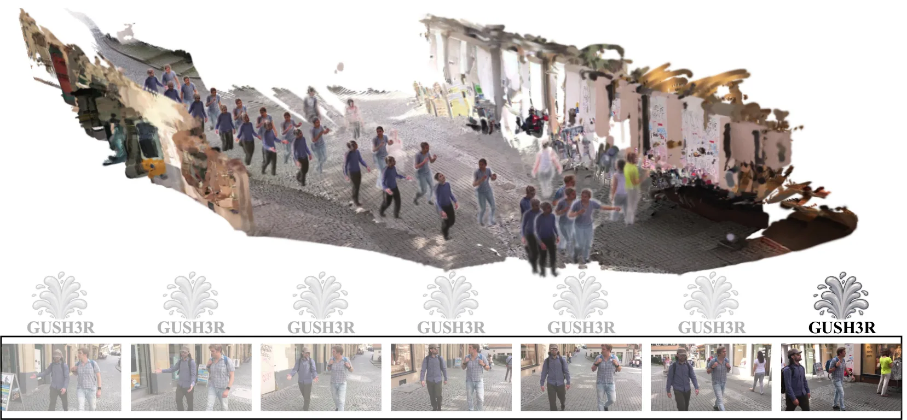
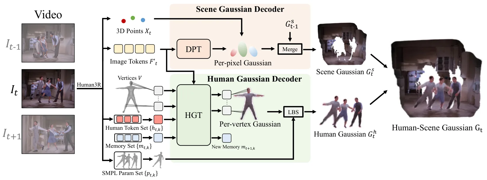
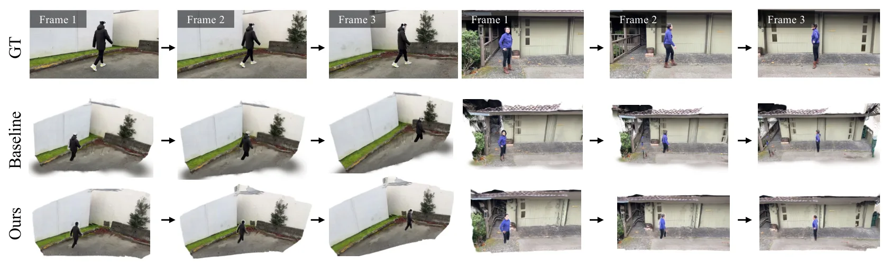
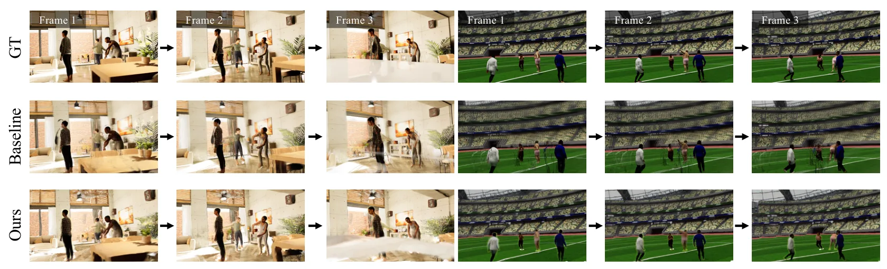
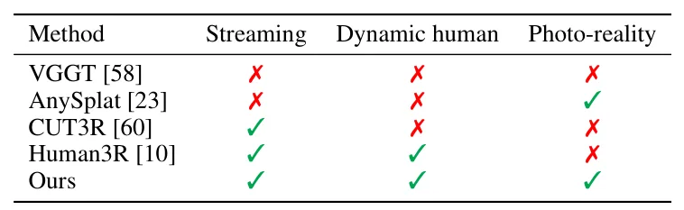
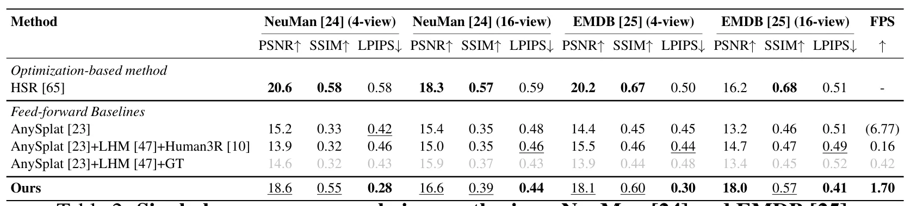
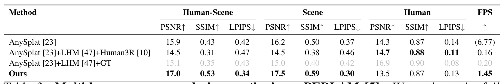

GUSH3R：把动态人和静态场景一次性表示为 GaussiansGUSH3R: Everyone Everywhere All at Once as Gaussians
动态人-场景统一建模对 AR/机器人环境理解有意义；相对 GNSS/SLAM 后端较远，重点看长期一致性和遮挡鲁棒性。
一句话工作总结
单目视频中同时前馈重建动态人体和静态场景，是动态 3DGS 场景表示的重要线索。
摘要
GUSH3R 从单目人-场景视频中以前馈方式在线重建动态人体和静态场景，把二者统一表示为几何一致且可新视角合成的 3DGS primitives。该方法旨在解决动态人体、相机运动和静态背景同时存在时的重建与渲染问题，并相比优化式方法显著提高推理效率。
Reconstructing dynamic human-scene environments from monocular videos is a challenging problem that requires jointly modeling scene geometry, camera motion, and non-rigid human dynamics while enabling photorealistic rendering. Recent feed-forward methods can efficiently predict geometry, but they are often limited to non-photorealistic representations such as point clouds and meshes, or they fail to handle non-rigid objects, particularly dynamic humans. To fill this gap, we present GUSH3R (Gaussian-Unified Scene Human 3D Reconstruction), a feed-forward framework for online dynamic human-scene reconstruction. From a monocular human-scene video, our method reconstructs dynamic humans (everyone) and static scenes (everywhere) in a single forward pass (all at once) as 3D Gaussian Splatting (3DGS) primitives (as gaussians), which are geometrically consistent and capable of novel view synthesis. Experiments on monocular human-scene datasets demonstrate that our approach achieves competitive novel view synthesis quality while significantly improving inference efficiency compared to optimization-based methods.
中文解读摘录
- 链接：https://arxiv.org/abs/2607.05243 ｜ PDF：https://arxiv.org/pdf/2607.05243 ｜ 项目页：https://abkeito.github.io/gush3r-page/
- 中文题名：GUSH3R：把动态人和静态场景一次性表示为 Gaussians
- 关键信息：从单目人-场景视频中前馈重建动态人体和静态场景，统一输出几何一致、可新视角合成的 3DGS primitives。
- 为什么值得看：动态人体与静态环境联合建模是移动机器人/AR 里真实场景重建的难点；该工作强调在线、单次前向和人-场景统一 Gaussian 表示。
- 需要核查：非刚体人体与相机运动解耦方式、多人遮挡下的拓扑一致性、静态背景尺度漂移，以及是否支持长视频增量更新。
图表/页面预览
{kind=link}

{kind=link}

{kind=link}

{kind=link}

{kind=link}

{kind=link}

{kind=link}
